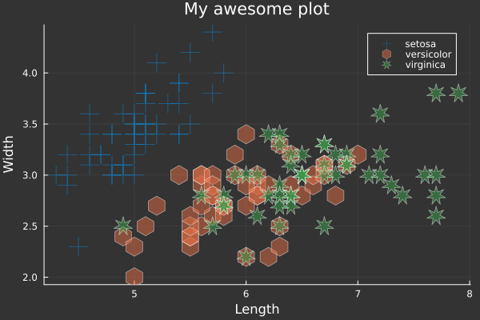

MinimalWorkingExamples.jl
Turn a snippet of Julia code into a shareable, self-contained Markdown block for pasting into a GitHub issue, Discourse post, or Slack message.
Inspired by the R package reprex.
Installation
MinimalWorkingExamples can be installed directly from the Julia package manager. In the Julia REPL, press ] to enter the Pkg mode, then run:
pkg> add MinimalWorkingExamplesBasic usage
The quickest way: copy your code to the clipboard, then call mwe() with no arguments:
using MinimalWorkingExamples
mwe()Or write your code in a begin...end block and pass it to @mwe directly:
@mwe begin
using Statistics
x = [1, 2, 3, 4, 5]
mean(x)
endEither way, this runs the code as a script in a fresh Julia process with a clean temporary environment, copies the result to your clipboard, and shows a preview of the rendered Markdown:
using Statistics
x = [1, 2, 3, 4, 5]
mean(x)
#> 3.0Environment
Julia Version 1.12.6 Commit 15346901f00 (2026-04-09 19:20 UTC) Build Info: Official https://julialang.org release Platform Info: OS: Linux (x86_64-linux-gnu) CPU: 4 × AMD EPYC 9V74 80-Core Processor WORD_SIZE: 64 LLVM: libLLVM-18.1.7 (ORCJIT, znver4) GC: Built with stock GC Threads: 1 default, 1 interactive, 1 GC (on 4 virtual cores) Environment: JULIA_PKG_SERVER =
The value of the last expression is shown as #>, as are any print calls and log messages (@warn, @info) in the code.
The result is returned as a MWEResult, so you can access the Markdown string directly if the clipboard is unavailable:
result = @mwe begin
1 + 1
end
print(result.md) # print the Markdown stringmwe() and @mwe accept the same keyword arguments.
Venue
The venue keyword controls the output format. Use :gh (default) for GitHub, Discourse, and other platforms that render GitHub-Flavored Markdown, :discord for Discord, and :slack for Slack.
@mwe begin
1 + 1
end venue=:slack:discord matches :gh but renders the attribution footer using Discord's -# subtext syntax instead of <sup>.
:slack strips the language identifier from the code fence (Slack doesn't render language-tagged fences) and omits the attribution footer.
Errors
If the code throws an error, it is captured and shown as a #> comment. The stacktrace is included in a collapsible block below the code:
@mwe begin
x = [1, 2, 3]
x[10]
end versioninfo=falseOutput:
x = [1, 2, 3]
x[10]
#> ERROR: BoundsError: attempt to access 3-element Vector{Int64} at index [10]Stacktrace
[1] throw_boundserror(A::Vector{Int64}, I::Tuple{Int64})
@ Base ./essentials.jl:15
[2] getindex(A::Vector{Int64}, i::Int64)
@ Base ./essentials.jl:919
[3] top-level scope
@ none:1Plots
Any plot produced while running the code is saved as a PNG file and replaced in the Markdown with a **Insert plot here: <path>** placeholder at the position it was produced. Files land in the plot_dir directory (default MWEPlots/, created next to your working directory); upload them alongside the generated Markdown.
Copy the following code, taken from the Plots.jl documentation, and call mwe() on it; this is the output:
# load a dataset
using RDatasets
iris = dataset("datasets", "iris");
# load the StatsPlots recipes (for DataFrames) available via:
# Pkg.add("StatsPlots")
using StatsPlots
# Scatter plot with some custom settings
@df iris scatter(
:SepalLength,
:SepalWidth,
group = :Species,
title = "My awesome plot",
xlabel = "Length",
ylabel = "Width",
m = (0.5, [:cross :hex :star7], 12),
bg = RGB(0.2, 0.2, 0.2)
)
Created on 2026-07-15 with MinimalWorkingExamples v0.2.0 using Julia 1.12.6Environment
Julia Version 1.12.6 Commit 15346901f00 (2026-04-09 19:20 UTC) Build Info: Official https://julialang.org release Platform Info: OS: Linux (x86_64-linux-gnu) CPU: 4 × AMD EPYC 9V74 80-Core Processor WORD_SIZE: 64 LLVM: libLLVM-18.1.7 (ORCJIT, znver4) GC: Built with stock GC Threads: 1 default, 1 interactive, 1 GC (on 4 virtual cores) Environment: JULIA_PKG_SERVER =
Including environment details
Two independent, opt-in-or-out blocks can be appended after the code:
versioninfo: appends the output ofversioninfo()in a collapsible "Environment" block. Defaults totruefor:gh, andfalsefor:discordand:slack, since collapsible<details>blocks aren't rendered outside GitHub-Flavored Markdown.manifest=false: passmanifest=trueto append the fullManifest.tomlin a collapsible block, so anyone can reproduce your exact package versions. Same caveat about<details>rendering applies for:discord/:slack.
@mwe begin
using DataFrames
df = DataFrame(a = 1:3, b = ["x", "y", "z"])
df
end manifest=truePinning a specific package version
Use packagespecs to pin one or more packages to a particular version, git revision, or URL.
using Pkg
@mwe begin
using Example
Example.hello("World")
end packagespecs=[PackageSpec(name="Example", version="0.5.3")] versioninfo=falseOutput:
using Example
Example.hello("World")
#> "Hello, World!"For more details on packagespecs options see Pkg.PackageSpec documentation.
Reproducing an exact environment
Pass manifest_path to use an existing Manifest.toml as-is.
@mwe begin
using Example
Example.hello("World")
end manifest_path="/path/to/your/Manifest.toml"